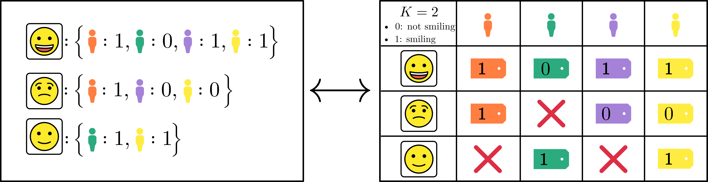
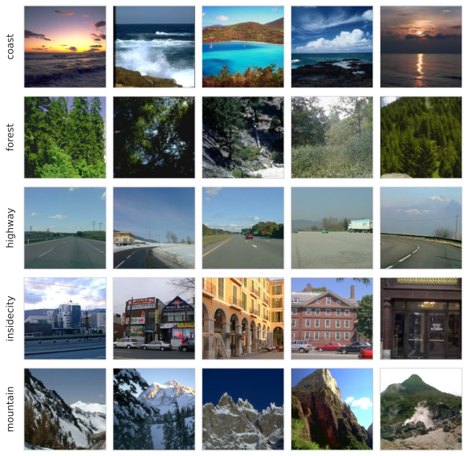

![]()
Code
! peerannot install ./datasets/labelme/labelme.py
! peerannot install ./datasets/cifar10H/cifar10h.py ISSN 2824-7795
ISSN 2824-7795
Crowdsourcing is a quick and easy way to collect labels for large datasets, involving many workers. However, it is common for workers to disagree with each other. Sources of error can arise from the workers’ skills, but also from the intrinsic difficulty of the task. We introduce peerannot, a Python library for managing and learning from crowdsourced labels.
Crowdsourcing is a quick and easy way to collect labels for large datasets, involving many workers. However, workers often disagree with each other. Sources of error can arise from the workers’ skills, but also from the intrinsic difficulty of the task. We present peerannot: a Python library for managing and learning from crowdsourced labels. Our library allows users to aggregate labels from common noise models or train a deep learning-based classifier directly from crowdsourced labels. In addition, we provide an identification module to easily explore the task difficulty of datasets and worker capabilities.
Image datasets widely use crowdsourcing to collect labels, involving many workers that can annotate images for a small cost (or even free for instance in citizen science) and faster than using expert labeling. Many classical datasets considered in machine learning have been created with human intervention to create labels, such as CIFAR-10, (Krizhevsky and Hinton 2009), ImageNet (Deng et al. 2009) or Pl@ntnet (Garcin et al. 2021) in image classification, but also COCO (Lin et al. 2014), solar photovoltaic arrays (Kasmi et al. 2023) or even macro litter (Chagneux et al. 2023) in image segmentation and object counting.
Crowdsourced datasets induce at least three major challenges to which we contribute with peerannot:
identify uses different scoring metrics to create a worker and/or task evaluation. This is particularly relevant considering the gamification of crowdsourcing experiments (Servajean et al. 2016)aggregate command, that given multiple labels, infers a ground truth label. From aggregated labels, a classifier can then be trained using the train command.aggregate-deep command.The library peerannot addresses these practical questions within a reproducible setting. Indeed, the complexity of experiments often leads to a lack of transparency and reproducible results for simulations and real datasets. We propose standard simulation settings with explicit implementation parameters that can be shared. For real datasets, peerannot is compatible with standard neural networks architectures from the Torchvision (Marcel and Rodriguez 2010) library and Pytorch (Paszke et al. 2019), allowing a flexible framework with easy-to-share scripts to reproduce experiments.

peerannot library. An optional preprocessing step using the identify command allows us to remove worse performing workers or images that can not be classified correctly (very bad quality for example). Then, from the cleaned dataset, the aggregate command may generate a single label per task from a prescribed strategy. From the aggregated labels we can train a neural network classifier with the train command. Otherwise, we can directly train a neural network classifier that takes into account the crowdsourcing setting in its architecture using aggregate-deep.Let us consider the classical supervised learning classification framework. A training set \mathcal{D}=\{(x_i, y_i^\star)\}_{i=1}^{n_{\text{task}}} is composed of n_{\text{task}} tasks x_i\in\mathcal{X} (the feature space) with (unobserved) ground truth label y_i^\star \in [K]=\{1,\dots,K\} one of the K possible classes. In the following, the tasks considered are generally RGB images. We use the notation \sigma(\cdot) for the softmax function. In praticular, given a classifier \mathcal{C} with logits outputs, \sigma(\mathcal{C}(x_i))_{[1]} represents the largest probability and we can sort the probabilities as \sigma(\mathcal{C}(x_i))_{[1]}\geq \sigma(\mathcal{C}(x_i))_{[2]}\geq \dots\geq \sigma(\mathcal{C}(x_i))_{[K]}. We use the i index notation to range over the different tasks and the j index notation for the workers in the crowdsourcing experiment. Note that indices start at position 1 in the equation to follow mathematical standard notation such as [K]=\{1,\dots,K\} but it should be addressed that, as this is a Python library, in the code indices start at the 0 position.
With crowdsourced data the ground truth of a task x_i, denoted y_i^\star is unknown, and there is no single label that can be trusted as in standard supervised learning (even on the train set!). Instead, there is a crowd of n_{\text{worker}} workers from which multiple workers (w_j)_j propose a label (y_i^{(j)})_j. The set of workers answering the task x_i is denoted by \mathcal{A}(x_i)=\{j\in[n_\text{worker}]: w_j \text{ answered }x_i\}. \tag{1}
The cardinal \vert \mathcal{A}(x_i)\vert is called the feedback effort on the task x_i. Note that the feedback effort can not exceed the total number of workers n_{\text{worker}}. Similarly, one can adopt a worker point of view: the set of tasks answered by a worker w_j is denoted \mathcal{T}(w_j)=\{i\in[n_\text{task}]: w_j \text{ answered } x_i\}. \tag{2}
The cardinal \vert \mathcal{T}(w_j)\vert is called the workerload of w_j. The final dataset can then be decomposed as: \mathcal{D}_{\text{train}} := \bigcup_{i\in[n_\text{task}]} \{(x_i, (y_i^{(j)})) \text{ for }j\in\mathcal{A}(x_i)\} = \bigcup_{j\in[n_\text{worker}]} \{(x_i, (y_i^{(j)})) \text{ for }i \in\mathcal{T}(w_j)\} \enspace.
In this article, we do not address the setting where workers report their self-confidence (Yasmin et al. 2022), nor settings where workers are presented a trapping set – i.e a subset of tasks where the ground truth is known to evaluate them with known labels (Khattak 2017).
peerannotCrowdsourced datasets come in various forms. To store crowdsourcing datasets efficiently and in a standardized way, peerannot proposes the following structure, where each dataset corresponds to a folder. Let us set up a toy dataset example to understand the data structure and how to store it.
{#lst-datasetconvention bash lst-cap="Dataset storage template"} datasetname ├── train │ ├── class1 │ │ ├─ imagename-<key>.png │ │ ├─ ... │ │ └─ anotherimagename-<anotherkey>.png │ ├── ... │ └── classK ├── val ├── test ├── metadata.json └── answers.json
The answers.json file stores the different votes for each task as described in Figure 2. Thus, for example for an image named smiley_face-1, the associated labels are stored in the answers.json at the key numbered 1. This key identification system allows us to track directly from the filename the crowdsourced labels without having to rely on multiple indexing files as can be traditionally proposed. Furthermore, storing labels in a dictionary is more memory-friendly than having an array of size (n_task,n_worker) and writing y_i^{(j)}=-1 when the worker w_j did not see the task x_i and y_i^{(j)}\in[K] otherwise.

peerannot in a file answers.json, right: data collected)In Figure 2, there are three tasks, n_{\text{worker}}=4 workers and K=2 classes. Any available task should be stored in a single file whose name follows the convention described in ?@lst-datasetconvention. These files are spread into a train, val and test subdir as in ImageFolder datasets from torchvision
Finally, a metadata.json file includes relevant information related to the crowdsourcing experiment such as the number of workers, the number of tasks, etc. For example, a minimal metadata.json file for the toy dataset presented in Figure 2 is:
{
"name": "toy-data",
"n_classes": 2,
"n_workers": 4,
"n_tasks": 3
}The toy-data example dataset is available as an example in the peerannot repository. Classical datasets in crowdsourcing such as \texttt{CIFAR-10H} (Peterson et al. 2019) and \texttt{LabelMe} (Rodrigues, Pereira, and Ribeiro 2014) can be installed directly using peerannot. To install them, run the install command from peerannot:
! peerannot install ./datasets/labelme/labelme.py
! peerannot install ./datasets/cifar10H/cifar10h.pyFor both \texttt{CIFAR-10H} and \texttt{LabelMe}, the dataset was originally released in classical supervised learning form (without crowdsourcing). These labels are used as ground truth in evaluations and visualizations. However, we emphasize that crowdsourcing strategies do not rely on the ground truth (only on the workers’ answers).
import torch
import matplotlib.pyplot as plt
from PIL import Image
import numpy as np
from pathlib import Path
nrow = 5
ncol = 5
fig, axs = plt.subplots(
nrow,
ncol,
sharey="row",
sharex="col",
figsize=(12,8)
)
match_ = {0: "bird", 1: "car", 2: "cat", 3: "deer", 4: "dog", 5: "frog", 6: "horse", 7: "plane", 8: "ship", 9: "truck"}
path = Path.cwd() / "datasets" / "cifar10H" / "train"
for i in range(nrow):
img_folder = path / f"{match_[i]}"
all_imgs = list(img_folder.glob("*"))[:ncol]
for j in range(ncol):
image = np.asarray(Image.open(path / all_imgs[j]))
axs[i,j].imshow(image, aspect="equal")
axs[i,j].axis("off")
axs[i,j].set_yticklabels([])
plt.subplots_adjust(wspace=-0.8, hspace=0.25)
plt.show()
Examples of \texttt{CIFAR-10H} images are available in Figure 3, and \texttt{LabelMe} examples in Figure 4 here below.
nrow = 5
ncol = 5
fig, axs = plt.subplots(
nrow,
ncol,
sharey="row",
sharex="col",
figsize=(12,8)
)
match_ = {0: "coast", 1: "forest", 2: "highway", 3: "insidecity", 4: "mountain", 5: "opencountry", 6: "street", 7: "tallbuilding"}
path = Path.cwd() / "datasets" / "labelme" / "train"
for i in range(nrow):
img_folder = path / f"{match_[i]}"
all_imgs = list(img_folder.glob("*"))[:ncol]
for j in range(ncol):
image = np.asarray(Image.open(path / all_imgs[j]))
axs[i,j].imshow(image, aspect="equal")
axs[i,j].axis("off")
axs[i,j].set_yticklabels([])
plt.subplots_adjust(wspace=-0.8, hspace=0.25)
plt.show()
The first question we address with peerannot is: How to aggregate multiple labels into a single label from crowdsourced tasks? The aggregation step can lead to two types of learnable labels \hat y_i\in\Delta_{K} (where \Delta_{K} is the simplex of dimension K-1 : $_{K}={p # cmap = cm.get_cmap(“Blues”)
: _{k=1}^K p_k = 1, p_k }$ ) depending on the use case for each task x_i, i=1,\dots,n_{\text{task}}:
Learning from soft labels has been shown to improve learning performance and make the classifier learn the task ambiguity (Zhang et al. 2018; Peterson et al. 2019; Park and Caragea 2022). However, crowdsourcing is often used as a stepping stone to create a new dataset. We usually expect a classification dataset to associate a task x_i to a single label and not a full probability distribution. In this case, we recommend to release the anonymous answered labels and the aggregation strategy used to reach a consensus on a single label. With peerannot, both soft and hard labels can be produced.
Note that when a strategy produces a soft label, a hard label can be easily induced by taking the mode, i.e., the class achieving the maximum probability.
Moreover, the concept of confusion matrices has been commonly used to represent worker abilities. A confusion matrix \pi^{(j)}\in\mathbb{R}^{K\times K} of a worker w_j is defined such that \pi^{(j)}_{k,\ell} = \mathbb{P}(y_i^{(j)}=\ell\vert y_i^\star=k).
import matplotlib.cm as cm
rng = np.random.default_rng(0)
mat_spammer = rng.uniform(0, 1, (1, 4))
mat_spammer /= mat_spammer.sum(axis=1).reshape(1, -1)
mat_spammer = np.vstack((mat_spammer, mat_spammer))
mat_spammer = np.vstack((mat_spammer, mat_spammer))
mat_nearperfect = np.clip(np.eye(4) + rng.normal(0, 0.1, (4,4)), 0, 1)
mat_nearperfect /= np.sum(mat_nearperfect, axis=1).reshape(-1, 1)
mat_common = np.copy(mat_nearperfect)
mat_common[:, [0, 1]] = mat_common[:, [1,0]]
def hinton(matrix, max_weight=None, ax=None, classes=None,
my_title={}):
"""Draw Hinton diagram for visualizing a weight matrix."""
ax = ax if ax is not None else plt.gca()
if not max_weight:
max_weight = 2 ** np.ceil(np.log2(np.abs(matrix).max()))
ax.set_title(my_title, y=1.02)
ax.patch.set_facecolor("white")
ax.set_aspect("equal", "box")
ax.xaxis.set_major_locator(plt.NullLocator())
ax.yaxis.set_major_locator(plt.NullLocator())
ax.set_xticks(range(len(classes)))
ax.set_yticks(range(len(classes)))
ax.set_ylabel("True label")
ax.set_xlabel("Proposed label")
ax.set_xlim(-1, len(classes))
ax.set_ylim(-1, len(classes))
ax.set_yticks(range(len(classes)))
ax.set_xticklabels(classes, rotation=90)
ax.set_yticklabels(classes)
blues = cm.Blues
newcolors = blues(np.linspace(0, 1, 256))
for (x, y), w in np.ndenumerate(matrix[classes, :][:, classes]):
idx = np.searchsorted(np.linspace(0, 1, 256), w)
color = newcolors[idx]
size = (
np.sqrt(abs(w) / max_weight)
if w > 0
else np.sqrt(abs(1e-8) / max_weight)
)
x, y = y, x
rect = plt.Rectangle(
[x - size / 2.1, y - size / 2.1],
size,
size,
facecolor=color,
edgecolor='black',
)
ax.add_patch(rect)
ax.margins(y=0.05, x=0.05)
ax.invert_yaxis()
fig, axs = plt.subplots(1, 3, sharey=True)
hinton(mat_spammer, 1, my_title="Spammer worker", ax=axs[0], classes=np.arange(4))
hinton(mat_common, 1, my_title="Confused worker", ax=axs[1], classes=np.arange(4))
hinton(mat_nearperfect, 1, my_title="Expert worker", ax=axs[2], classes=np.arange(4))
axs[1].set_ylabel("")
axs[2].set_ylabel("")
plt.tight_layout()
plt.show()In Figure 5, we illustrat multiple profiles of workers. In particular, one type of worker that can hurt data quality is the spammer. Raykar and Yu (2011) defined a spammer as a worker that answers randomly as: \forall k\in[K],\ \mathbb{P}(y_i^{(j)}=k|y_i^\star) = \mathbb{P}(y_i^{(j)}=k)\enspace. \tag{3}
As the probability distribution by row represent the confusion given a ground truth label, the spammer has a confusion matrix with near-identical rows. Apart from the spammer, common mistakes often involve workers ming-up one or several classes. Expert workers have a confusion matrix near the identity matrix.
We list below the most classical aggregation strategies used in crowdsourcing.
The most intuitive way to create a label from multiple answers for any type of crowdsourced task is to take the majority vote (MV). Yet, this strategy has many shortcomings (James 1998) – there is no noise model, no worker reliability estimated, no task difficulty involved and especially no way to remove poorly performing workers. This standard choice can be expressed as:
\hat y_i^{\text{MV}} = \operatornamewithlimits{argmax}_{k\in[K]} \sum_{j\in\mathcal{A}(x_i)} \mathbf{1}_{\{y_i^{(j)}=k\}} \enspace.
One pitfall with MV is that the label produced is hard, hence the ambiguity is discarded by construction. To remedy this, the Naive Soft (NS) labeling consists in using the empirical distribution as the task label:
\hat y_i^{\text{NS}} = \bigg(\frac{1}{\vert\mathcal{A}(x_i)\vert}\sum_{j\in\mathcal{A}(x_i)} \mathbf{1}_{\{y_i^{(j)}=k\}} \bigg)_{j\in[K]} \enspace. With the NS label, we keep the ambiguity, but all workers and all tasks are put on the same level. In practice, it is known that each worker comes with their abilities, thus modeling this knowledge can produce better results.
Refining the aggregation, researchers began creating a noise model to take into account the workers’ abilities. These types of models are most often optimized using EM-based procedures and one of the most studied (Gao and Zhou 2013) and applied (Servajean et al. 2017; Rodrigues and Pereira 2018) is the Dawid and Skene’s (DS) model (Dawid and Skene 1979). Assuming the workers are answering tasks independently, this model boils down to model pairwise confusions between each possible class. Each worker w_j is assigned a confusion matrix \pi^{(j)}\in\mathbb{R}^{K\times K} as described in Section 3. The model assumes that for a task x_i, conditionally on the true label y_i^\star=k the label distribution of the worker’s answer follows a multinomial distribution with probabilities \pi^{(j)}_{k,\cdot} for each worker. Each class has a prevalence \rho_k=\mathbb{P}(y_i^\star=k) to appear in the dataset. Using the independence between workers, we obtain the following likelihood to maximize (with latent variables \rho, \{\pi^{(j)}\}_{j} and T and observed variables \{y_i^{(j)}\}_{i,j}):
\displaystyle\prod_{i\in [n_{\texttt{task}}]}\prod_{k \in [K]}\bigg[\rho_k\prod_{j\in [n_{\texttt{worker}}]} \prod_{k\in [K]}\big(\pi^{(j)}_{k, k}\big)^{\mathbf{1}_{\{y_i^{(j)}=k\}}} \bigg]^{T_{i,k}},
with T_{i,k}=\mathbf{1}_{\{y_i^{\star}=k \}}. The final aggregated soft label is \hat y_i^{\text{DS}} = T_{i,\cdot}.

Many variants of the DS model have been proposed in the literature, using Dirichlet priors on the confusion matrices (Passonneau and Carpenter 2014), using 1\leq L\leq n_{\text{worker}} clusters of workers (Imamura, Sato, and Sugiyama 2018) (DSWC) or even faster implementation that produces only hard labels (Sinha, Rao, and Balasubramanian 2018).
In particular, the DSWC strategy (Dawid and Skene with Worker Clustering) highly reduces the dimension of the parameters in the DS model. In the original model, there are K^2\times n_{\text{worker}} parameters to be estimated for the confusion matrices only. The DSWC model reduces them to K^2\times L + L parameters. Indeed, there are L confusion matrices \{\Lambda_1,\dots,\Lambda_L\} and the confusion matrix of a cluster is assumed drawn from a multinomial distribution with weights (\tau_1,\dots,\tau_L), such that \mathbb{P}(\pi^{(j)}=\Lambda_\ell)=\tau_\ell.
Finally, we present the GLAD model (Whitehill et al. 2009) that not only takes into account the worker’s ability, but also the task difficulty in the noise model. The likelihood is optimized using an EM algorithm to recover the soft label \hat y_i^{\text{GLAD}}.

Denoting \alpha_j\in\mathbb{R} the worker ability (the higher the better) and \beta_i\in\mathbb{R}^+_\star the task’s difficulty (the higher the easier), the model noise is:
\mathbb{P}(y_i^{(j)}=y_i^\star\vert \alpha_j,\beta_i) = \frac{1}{1+\exp(-\alpha_j\beta_i)} \enspace. GLAD’s model also assumes that the errors are uniform across wrong labels, thus: \forall k \in [K],\ \mathbb{P}(y_i^{(j)}=k\vert y_i^\star\neq k,\alpha_j,\beta_i) = \frac{1}{K-1}\left(1-\frac{1}{1+\exp(-\alpha_j\beta_i)}\right)\enspace.
peerannotAll of these aggregation strategies – and more – are available in the peerannot library from the peerannot.models module. Each model is a class object in its own Python file. It inherits from the CrowdModel template class and is defined with at least two methods:
run: includes the optimization procedure to obtain needed weights (e.g. the EM algorithm for the DS model),get_probas: returns the soft labels output for each task.One way to evaluate the label aggregation strategies is to measure their accuracy. This means that the underlying ground truth must be known – or at least for a representative subset. As the set of n_{\text{task}} can be seen as a training set for a future classifier, we denote this metric \operatornamewithlimits{AccTrain} on a dataset \mathcal{D} for some given aggregated label (\hat y_i)_i as:
\operatornamewithlimits{AccTrain}(\mathcal{D}) = \frac{1}{\vert \mathcal{D}\vert}\sum_{i=1}^{\vert\mathcal{D}\vert} \mathbf{1}_{\{y_i^\star=\operatornamewithlimits{argmax}_{k\in[K]}\hat y_i\}} \enspace.
In the following, we write \operatornamewithlimits{AccTrain} for \operatornamewithlimits{AccTrain}(\mathcal{D}_{\text{train}}) as we only consider the full training set so there is no ambiguity. While this metric is useful, in practice there are a few arguable issues:
We first consider classical simulation settings in the literature that can easily be created and reproduced using peerannot. For each dataset, we present the distribution of the number of workers per task (|\mathcal{A}(x_i)|)_i Equation 1 on the right and the distribution of the number of tasks per worker (|\mathcal{T}(w_j)|)_j Equation 2 on the left.
The independent mistakes consider that each worker w_j answers follows a multinomial distribution with weights given at the row y_i^\star of their confusion matrix \pi^{(j)}\in\mathbb{R}^{K\times K}. Each confusion row in the confusion matrix is generated uniformly in the simplex. Then, we make the matrix diagonally dominant (to represent non-adversarial workers) by switching the diagonal term with the maximum value by row. Answers are independent of one another as each matrix is generated independently and each worker answers independently of other workers. In this setting, the DS model is expected to perform better with enough data as we are simulating data from its assumed noise model.
We simulate n_{\text{task}}=200 tasks and n_{\text{worker}}=30 workers with K=5 possible classes. Each task x_i receives \vert\mathcal{A}(x_i)\vert=10 labels. With 200 tasks and 30 workers, asking for 10 leads to around \frac{200\times 10}{30}\simeq 67 tasks per worker (with variations due to randomness in the affectations).
! peerannot simulate --n-worker=30 --n-task=200 --n-classes=5 \
--strategy independent-confusion \
--feedback=10 --seed 0 \
--folder ./simus/independentfrom peerannot.helpers.helpers_visu import feedback_effort, working_load
import seaborn as sns
import matplotlib.pyplot as plt
from matplotlib.ticker import MaxNLocator
from pathlib import Path
import matplotlib.ticker as mtick
sns.set_style("whitegrid")
votes_path = Path.cwd() / "simus" / "independent" / "answers.json"
metadata_path = Path.cwd() / "simus" / "independent" / "metadata.json"
efforts = feedback_effort(votes_path)
workerload = working_load(votes_path, metadata_path)
feedback = feedback_effort(votes_path)
nbins = 17
fig, ax = plt.subplots(1, 2, figsize=(9, 4))
sns.histplot(workerload, stat="percent", bins=nbins, shrink=1, ax=ax[0])
ax[0].yaxis.set_major_formatter(mtick.PercentFormatter(decimals=0))
ax[0].set_xlabel(r"$\vert\mathcal{T}(w_j)\vert$")
sns.histplot(feedback, stat="percent", bins=nbins, shrink=1, ax=ax[1])
ax[1].yaxis.set_major_formatter(mtick.PercentFormatter(decimals=0))
ax[1].set_xlabel(r"$\vert\mathcal{A}(x_i)\vert$")
ax[1].xaxis.set_major_locator(plt.MaxNLocator(3))
ax[1].set_xlim(8, 12)
ax[1].xaxis.set_major_locator(MaxNLocator(integer=True))
for i in range(2):
ax[i].xaxis.set_major_locator(MaxNLocator(3))
ax[i].xaxis.label.set_size(15)
ax[i].yaxis.label.set_size(15)
ax[i].xaxis.set_tick_params(labelsize=13)
ax[i].yaxis.set_tick_params(labelsize=13)
ax[i].title.set_size(18)
plt.tight_layout()
plt.show()
With the obtained answers, we can look at the aforementioned aggregation strategies performance:
for strat in ["MV", "NaiveSoft", "DS", "GLAD", "DSWC[L=5]", "DSWC[L=10]"]:
! peerannot aggregate ./simus/independent/ -s {strat}import pandas as pd
import numpy as np
from IPython.display import display
simu_indep = Path.cwd() / 'simus' / "independent"
results = {"mv": [], "naivesoft": [], "glad": [], "ds": [], "dswc[l=5]": [], "dswc[l=10]": []}
for strategy in results.keys():
path_labels = simu_indep / "labels" / f"labels_independent-confusion_{strategy}.npy"
ground_truth = np.load(simu_indep / "ground_truth.npy")
labels = np.load(path_labels)
acc = (
np.mean(labels == ground_truth)
if labels.ndim == 1
else np.mean(
np.argmax(labels, axis=1)
== ground_truth
)
)
results[strategy].append(acc)
results = pd.DataFrame(results, index=['AccTrain'])
results.columns = map(str.upper, results.columns)
results = results.style.set_table_styles([dict(selector='th', props=[('text-align', 'center')])])
results.set_properties(**{'text-align': 'center'})
results = results.format(precision=3)
display(results)| MV | NAIVESOFT | GLAD | DS | DSWC[L=5] | DSWC[L=10] | |
|---|---|---|---|---|---|---|
| AccTrain | 0.785 | 0.760 | 0.780 | 0.890 | 0.775 | 0.770 |
As expected by the simulation framework, Table 1 fits the DS model, thus leading to better accuracy to retrieve the simulated labels for the DS model. The MV aggregation does not consider any worker-ability scoring or the task’s difficulty and performs the worse.
Remark. peerannot can also simulate datasets with an imbalanced number of votes chosen uniformly at random between 1 and the number of workers available). For example:
! peerannot simulate --n-worker=30 --n-task=200 --n-classes=5 \
--strategy independent-confusion \
--imbalance-votes \
--seed 0 \
--folder ./simus/independent-imbalanced/sns.set_style("whitegrid")
votes_path = Path.cwd() / "simus" / "independent-imbalanced" / "answers.json"
metadata_path = Path.cwd() / "simus" / "independent-imbalanced" / "metadata.json"
efforts = feedback_effort(votes_path)
workerload = working_load(votes_path, metadata_path)
feedback = feedback_effort(votes_path)
nbins = 17
fig, ax = plt.subplots(1, 2, figsize=(9, 4))
sns.histplot(workerload, stat="percent", bins=nbins, shrink=1, ax=ax[0])
ax[0].yaxis.set_major_formatter(mtick.PercentFormatter(decimals=0))
ax[0].set_xlabel(r"$\vert\mathcal{T}(w_j)\vert$")
sns.histplot(feedback, stat="percent", bins=nbins, shrink=1, ax=ax[1])
ax[1].yaxis.set_major_formatter(mtick.PercentFormatter(decimals=0))
ax[1].set_xlabel(r"$\vert\mathcal{A}(x_i)\vert$")
ax[1].xaxis.set_major_locator(plt.MaxNLocator(3))
ax[1].xaxis.set_major_locator(MaxNLocator(integer=True))
for i in range(2):
ax[i].xaxis.set_major_locator(MaxNLocator(3))
ax[i].xaxis.label.set_size(15)
ax[i].yaxis.label.set_size(15)
ax[i].xaxis.set_tick_params(labelsize=13)
ax[i].yaxis.set_tick_params(labelsize=13)
ax[i].title.set_size(18)
plt.tight_layout()
plt.show()
With the obtained answers, we can look at the aforementioned aggregation strategies performance:
for strat in ["MV", "NaiveSoft", "DS", "GLAD", "DSWC[L=5]", "DSWC[L=10]"]:
! peerannot aggregate ./simus/independent-imbalanced/ -s {strat}import pandas as pd
import numpy as np
from IPython.display import display
simu_indep = Path.cwd() / 'simus' / "independent-imbalanced"
results = {"mv": [], "naivesoft": [], "glad": [], "ds": [], "dswc[l=5]": [], "dswc[l=10]": []}
for strategy in results.keys():
path_labels = simu_indep / "labels" / f"labels_independent-confusion_{strategy}.npy"
ground_truth = np.load(simu_indep / "ground_truth.npy")
labels = np.load(path_labels)
acc = (
np.mean(labels == ground_truth)
if labels.ndim == 1
else np.mean(
np.argmax(labels, axis=1)
== ground_truth
)
)
results[strategy].append(acc)
results = pd.DataFrame(results, index=['AccTrain'])
results.columns = map(str.upper, results.columns)
results = results.style.set_table_styles([dict(selector='th', props=[('text-align', 'center')])])
results.set_properties(**{'text-align': 'center'})
results = results.format(precision=3)
display(results)| MV | NAIVESOFT | GLAD | DS | DSWC[L=5] | DSWC[L=10] | |
|---|---|---|---|---|---|---|
| AccTrain | 0.795 | 0.830 | 0.810 | 0.895 | 0.845 | 0.840 |
While more realistic, working with an imbalanced number of votes per task can lead to disrupting orders of performance for some strategies (here GLAD is downgraded).
The correlated mistakes are also known as the student-teacher setting. Consider that the crowd of workers is divided into two categories: teachers and students (with n_{\text{teacher}} + n_{\text{student}}=n_{\text{worker}}). Each student is randomly assigned to one teacher at the beginning of the experiment. We generate the (diagonally dominant as in Section 3.2.1) confusion matrices of each teacher and the the student share the same confusion matrix as their associated teacher. Hence, clustering strategies are expected to perform best in this context. Then, they all answer independently, following a multinomial distribution with weights given at the row y_i^\star of their confusion matrix \pi^{(j)}\in\mathbb{R}^{K\times K}.
We simulate n_{\text{task}}=200 tasks and n_{\text{worker}}=30 with 80\% of students in the crowd. There are K=5 possible classes. Each task receives \vert\mathcal{A}(x_i)\vert=10 labels.
! peerannot simulate --n-worker=30 --n-task=200 --n-classes=5 \
--strategy student-teacher \
--ratio 0.8 \
--feedback=10 --seed 0 \
--folder ./simus/student_teachervotes_path = Path.cwd() / "simus" / "student_teacher" / "answers.json"
metadata_path = Path.cwd() / "simus" / "student_teacher" / "metadata.json"
efforts = feedback_effort(votes_path)
workerload = working_load(votes_path, metadata_path)
feedback = feedback_effort(votes_path)
nbins = 17
fig, ax = plt.subplots(1, 2, figsize=(9, 4))
sns.histplot(workerload, stat="percent", bins=nbins, shrink=1, ax=ax[0])
ax[0].yaxis.set_major_formatter(mtick.PercentFormatter(decimals=0))
ax[0].set_xlabel(r"$\vert\mathcal{T}(w_j)\vert$")
sns.histplot(feedback, stat="percent", bins=nbins, shrink=1, ax=ax[1])
ax[1].yaxis.set_major_formatter(mtick.PercentFormatter(decimals=0))
ax[1].set_xlabel(r"$\vert\mathcal{A}(x_i)\vert$")
ax[1].xaxis.set_major_locator(plt.MaxNLocator(3))
ax[1].set_xlim(8, 12)
ax[1].xaxis.set_major_locator(MaxNLocator(integer=True))
for i in range(2):
ax[i].xaxis.set_major_locator(MaxNLocator(3))
ax[i].xaxis.label.set_size(15)
ax[i].yaxis.label.set_size(15)
ax[i].xaxis.set_tick_params(labelsize=13)
ax[i].yaxis.set_tick_params(labelsize=13)
ax[i].title.set_size(18)
plt.tight_layout()
plt.show()
With the obtained answers, we can look at the aforementioned aggregation strategies performance:
for strat in ["MV", "NaiveSoft", "DS", "GLAD", "DSWC[L=5]", "DSWC[L=10]"]:
! peerannot aggregate ./simus/student_teacher/ -s {strat}simu_corr = Path.cwd() / 'simus' / "student_teacher"
results = {"mv": [], "naivesoft": [], "glad": [], "ds": [], "dswc[l=5]": [], "dswc[l=10]": []}
for strategy in results.keys():
path_labels = simu_corr / "labels" / f"labels_student-teacher_{strategy}.npy"
ground_truth = np.load(simu_corr / "ground_truth.npy")
labels = np.load(path_labels)
acc = (
np.mean(labels == ground_truth)
if labels.ndim == 1
else np.mean(
np.argmax(labels, axis=1)
== ground_truth
)
)
results[strategy].append(acc)
results = pd.DataFrame(results, index=['AccTrain'])
results.columns = map(str.upper, results.columns)
results = results.style.set_table_styles([dict(selector='th', props=[('text-align', 'center')])])
results.set_properties(**{'text-align': 'center'})
results = results.format(precision=3)
display(results)| MV | NAIVESOFT | GLAD | DS | DSWC[L=5] | DSWC[L=10] | |
|---|---|---|---|---|---|---|
| AccTrain | 0.720 | 0.690 | 0.645 | 0.755 | 0.795 | 0.815 |
With Table 3, we see that with correlated data (24 students and 6 teachers), using 5 confusion matrices with DSWC[L=5] outperforms the vanilla DS strategy that does not consider the correlations. And the best-performing method here estimates only 10 confusion matrices (instead of 30 for the vanilla DS model).
For the final simulation setting, we consider the so called discrete difficulty presented in Whitehill et al. (2009). Contrary to other simulations, we here consider that workers belong to two levels of abilities: or , and tasks have two levels of difficulty: or . The keyword ratio-diff indicates the prevalence of each level of difficulty, it is defined as the ratio of tasks over tasks:
\texttt{ratio-diff} = \frac{\mathbb{P}(\texttt{easy})}{\mathbb{P}(\texttt{hard})} \text{ with } \mathbb{P}(\texttt{easy}) +\mathbb{P}(\texttt{hard}) = 1 \enspace.
Difficulties are then drawn at random. Tasks that are are answered correctly by every worker. Tasks that are are answered following the confusion matrix assigned to each worker. Each worker then answers independently to the presented tasks.
We simulate n_{\text{task}}=500 tasks and n_{\text{worker}}=100 with 35\% of good workers in the crowd and 50\% of easy tasks. There are K=5 possible classes. Each task receives \vert\mathcal{A}(x_i)\vert=10 labels.
! peerannot simulate --n-worker=100 --n-task=200 --n-classes=5 \
--strategy discrete-difficulty \
--ratio 0.35 --ratio-diff 1 \
--feedback 10 --seed 0 \
--folder ./simus/discrete_difficultyvotes_path = Path.cwd() / "simus" / "discrete_difficulty" / "answers.json"
metadata_path = Path.cwd() / "simus" / "discrete_difficulty" / "metadata.json"
efforts = feedback_effort(votes_path)
workerload = working_load(votes_path, metadata_path)
feedback = feedback_effort(votes_path)
nbins = 17
fig, ax = plt.subplots(1, 2, figsize=(9, 4))
sns.histplot(workerload, stat="percent", bins=nbins, shrink=1, ax=ax[0])
ax[0].yaxis.set_major_formatter(mtick.PercentFormatter(decimals=0))
ax[0].set_xlabel(r"$\vert\mathcal{T}(w_j)\vert$")
sns.histplot(feedback, stat="percent", bins=nbins, shrink=1, ax=ax[1])
ax[1].yaxis.set_major_formatter(mtick.PercentFormatter(decimals=0))
ax[1].set_xlabel(r"$\vert\mathcal{A}(x_i)\vert$")
ax[1].set_xlim(8, 12)
ax[1].xaxis.set_major_locator(MaxNLocator(integer=True))
for i in range(2):
ax[i].xaxis.set_major_locator(MaxNLocator(3))
ax[i].xaxis.label.set_size(15)
ax[i].yaxis.label.set_size(15)
ax[i].xaxis.set_tick_params(labelsize=13)
ax[i].yaxis.set_tick_params(labelsize=13)
ax[i].title.set_size(18)
plt.tight_layout()
plt.show()
With the obtained answers, we can look at the aforementioned aggregation strategies performance:
for strat in ["MV", "NaiveSoft", "DS", "GLAD", "DSWC[L=2]", "DSWC[L=5]"]:
! peerannot aggregate ./simus/discrete_difficulty/ -s {strat}simu_corr = Path.cwd() / 'simus' / "discrete_difficulty"
results = {"mv": [], "naivesoft": [], "glad": [], "ds": [], "dswc[l=2]": [], "dswc[l=5]": []}
for strategy in results.keys():
path_labels = simu_corr / "labels" / f"labels_discrete-difficulty_{strategy}.npy"
ground_truth = np.load(simu_corr / "ground_truth.npy")
labels = np.load(path_labels)
acc = (
np.mean(labels == ground_truth)
if labels.ndim == 1
else np.mean(
np.argmax(labels, axis=1)
== ground_truth
)
)
results[strategy].append(acc)
results = pd.DataFrame(results, index=['AccTrain'])
results.columns = map(str.upper, results.columns)
results = results.style.set_table_styles([dict(selector='th', props=[('text-align', 'center')])])
results.set_properties(**{'text-align': 'center'})
results = results.format(precision=3)
display(results)| MV | NAIVESOFT | GLAD | DS | DSWC[L=2] | DSWC[L=5] | |
|---|---|---|---|---|---|---|
| AccTrain | 0.820 | 0.790 | 0.845 | 0.810 | 0.600 | 0.660 |
Finally, in this setting involving task difficulty coefficients, the only strategy that involves a latent variable for the task difficulty, knowing GLAD, outperforms the other strategies (see Table 4). Note that in this case, creating clusters of answers leads to worse decisions than an MV aggregation.
To summarize our simulations, we see that depending on workers answering strategies, different latent variable models perform best. However, these are unknown outside of a simulation framework, thus if we want to obtain labels from multiple responses, we need to investigate multiple models. This can be done easily with peerannot as we demonstrated using the aggregate module. However, one might not want to generate a label, simply learn a classifier to predict labels on unseen data. This leads us to another module part of peerannot.
Most often, tasks are crowdsourced to create a large training set as modern machine learning models require more and more data. The aggregation step then simply becomes the first step in the complete learning pipeline. However, instead of aggregating labels, modern neural networks are directly trained end-to-end from multiple noisy labels.
In recent years, directly learning a classifier from noisy labels was introduced. Two of the most used models: CrowdLayer (Rodrigues and Pereira 2018) and CoNAL (Chu, Ma, and Wang 2021), are directly available in peerannot. These two learning strategies directly incorporate a DS-based noise model in the neural network’s architecture.
CrowdLayer trains a classifier with noisy labels as follows. Let the scores (logits) output by a given classifier neural network \mathcal{C} be z_i=\mathcal{C}(x_i). Then CrowdLayer adds as a last layer \pi\in\mathbb{R}^{n_{\text{worker}}\times K\times K}, the tensor of all \pi^{(j)}’s such that the crossentropy loss (\mathrm{CE}) is adapted to the crowdsourcing setting into \mathcal{L}_{CE}^{\text{CrowdLayer}} and computed as:
\mathcal{L}_{CE}^{\text{CrowdLayer}}(x_i) = \sum_{j\in\mathcal{A}(x_i)} \mathrm{CE}(\sigma\left(\pi^{(j)}\sigma\big(z_i\big)\right), y_i^{(j)}) \enspace,
where the crossentropy loss for two distribution u,v \in\Delta_{K} is defined as \mathrm{CE}(u, v) = \sum_{k\in[K]} u_k\log(v_k).
The confusion matrices are taken into the network architecture as a new layer to transform the output probabilities. The backbone classifier predicts a distribution that is then corrupted through the added layer to learn the worker-specific confusion.
For some datasets, it was noticed that global confusion occurs between the proposed classes. It is the case for example in the \texttt{LabelMe} dataset (Rodrigues et al. 2017) where classes overlap. In this case, Chu, Ma, and Wang (2021) proposed to extend the CrowdLayer model by adding global confusion matrix \pi^g\in\mathbb{R}^{K\times K} to the model on top of each worker’s confusion.
Given the output z_i=\mathcal{C}(x_i)\in\mathbb{R}^K of a given classifier and task, CoNAL interpolates between the local confusion \pi^{(j)}z_i and the global one \pi^gz_i. The loss function is computed as follows: \begin{aligned} &\mathcal{L}_{CE}^{\text{CoNAL}}(x_i) = \sum_{j\in\mathcal{A}(x_i)} \mathrm{CE}(h_i^{(j)}, y_i^{(j)}) \enspace, \\ &\text{with } h_i^{(j)} = \sigma\left(\big(\omega_i^{(j)} \pi^g + (1-\omega_i^{(j)})\pi^{(j)}\big)z_i\right) \enspace. \end{aligned} \
The interpolation weight \omega_i^{(j)} is unobservable in practice. So, to compute h_i^{(j)}, the weight is obtained through an auxiliary network. This network takes in input the image and worker information and outputs a task-related vector v_i and a worker-related vector u_j of the same dimension. Finally, w_i^{(j)}=(1+\exp(- u_j^\top v_i))^{-1}.
Both CrowdLayer and CoNAL model worker confusions directly in the classifier’s weights to learn from the noisy collected labels and are available in peerannot as we will see in the following.
The \mathrm{AccTrain} metric presented in Section 3.2 might no longer be of interest when training a classifier. Classical error measurements involve a test dataset to estimate the generalization error. To do so, we present hereafter two error metrics. Assuming we trained our classifier f_\theta on a training set:
The accuracy represents how well the classifier generalizes, and the expected calibration error (ECE) quantifies the deviation between the accuracy and the confidence of the classifier. Modern neural networks are known to often be overconfident in their predictions (Guo et al. 2017). However, it has also been remarked that training on crowdsourced data, depending on the strategy, mitigates this confidence issue. That is why we propose to compare them both in our coming experiments. Note that the ECE error estimator is known to be biased (Gruber and Buettner 2022). Smaller training sets are known to have a higher ECE estimation error. And in the crowdsourcing setting, openly available datasets are often quite small.
peerannot on real datasetsFew real crowdsourcing experiments have been released publicly. Among the available ones, \texttt{CIFAR-10H} (Peterson et al. 2019) is one of the largest with 10 000 tasks labeled by workers (the testing set of CIFAR-10). The main limitation of \texttt{CIFAR-10H} is that there are few disagreements between workers and a simple majority voting already leads to a near-perfect \mathrm{AccTrain} error. Hence, comparing the impact of aggregation and end-to-end strategies might not be relevant (Peterson et al. 2019; Aitchison 2021), it is however a good benchmark for task difficulty identification and worker evaluation scoring
The \texttt{LabelMe} dataset was extracted from crowdsourcing segmentation experiments and a subset of K=8 classes was released in Rodrigues et al. (2017).
Let us use peerannot to train a VGG-16 with two dense layers on the \texttt{LabelMe} dataset. Note that this modification was introduced to reach state-of-the-art performance in (Chu, Ma, and Wang 2021). Other models from the torchvision library can be used, such as Resnets, Alexnet etc.
for strat in ["MV", "NaiveSoft", "DS", "GLAD"]:
! peerannot aggregate ./labalme/ -s {strat}
! peerannot train ./labelme -o labelme_${strat} -K 8 --labels=./labelme/labels/labels_labelme_${strat}.npy --model modellabelme --n-epochs 500 -m 50 -m 150 -m 250 --scheduler=multistep --lr=0.01 --num-workers=8 --pretrained --data-augmentation --optimizer=adam --batch-size=32 --img-size=224 --seed=1
for strat in ["CrowdLayer", "CoNAL[scale=0]", "CoNAL[scale=1e-4]"]:
! peerannot aggregate-deep ./ -o labelme_${strat} --answers ./labelme/answers.json -s ${strat} --model modellabelme --img-size=224 --pretrained --n-classes=8 --n-epochs=500 --lr=0.001 -m 300 -m 400 --scheduler=multistep --batch-size=228 --optimizer=adam --num-workers=8 --data-augmentation --seed=1
# command to save separately a specific part of conal model (memory intensive otherwise)
path_ = Path.cwd() / "datasets" / "labelme"
best_conal = torch.load(path_ / "best_models" / "labelme_conal[scale=1e-4].pth", map_location="cpu")
torch.save(best_conal["noise_adaptation"]["local_confusion_matrices"], path_ / "best_models"/ "labelme_conal[scale=1e-4]_local_confusion.pth")def highlight_max(s, props=''):
return np.where(s == np.nanmax(s.values), props, '')
def highlight_min(s, props=''):
return np.where(s == np.nanmin(s.values), props, '')
import json
dir_results = Path().cwd() / 'datasets' / "labelme" / "results"
meth, accuracy, ece = [], [], []
for res in dir_results.glob("modellabelme/*"):
filename = res.stem
_, mm = filename.split("_")
meth.append(mm)
with open(res, "r") as f:
dd = json.load(f)
accuracy.append(dd["test_accuracy"])
ece.append(dd["test_ece"])
results = pd.DataFrame(list(zip(meth, accuracy, ece)), columns=["method", "AccTest", "ECE"])
results["method"] = results["method"].str.upper()
results = results.sort_values(by="AccTest", ascending=True)
results.reset_index(drop=True, inplace=True)
results = results.style.set_table_styles([dict(selector='th', props=[('text-align', 'center')])])
results.set_properties(**{'text-align': 'center'})
results = results.format(precision=3)
results.apply(highlight_max, props='background-color:#e6ffe6;', axis=0, subset=["AccTest"])
results.apply(highlight_min, props='background-color:#e6ffe6;', axis=0, subset=["ECE"])
display(results)| method | AccTest | ECE | |
|---|---|---|---|
| 0 | DS | 81.061 | 0.189 |
| 1 | MV | 85.606 | 0.143 |
| 2 | NAIVESOFT | 86.448 | 0.136 |
| 3 | CROWDLAYER | 87.205 | 0.117 |
| 4 | GLAD | 87.542 | 0.124 |
| 5 | CONAL[SCALE=0] | 88.468 | 0.115 |
| 6 | CONAL[SCALE=1E-4] | 88.889 | 0.112 |
As we can see, CoNAL strategy performs best. In this case, it is expected behavior as CoNAL was created for the \texttt{LabelMe} dataset. However, using peerannot we can look into why modeling common confusion returns better results with this dataset. To do so, we can explore the datasets from two points of view: worker-wise or task-wise.
If a dataset requires crowdsourcing to be labeled, it is because expert knowledge is long and costly to obtain. In the era of big data, where datasets are built using web scraping (or using a platform like Amazon Mechanical Turk), citizen science is popular as it is an easy way to produce many labels.
However, mistakes and confusions happen during these experiments. Sometimes involuntarily (e.g. because the task is too hard or the worker is unable to differentiate between two classes) and sometimes not (e.g. the worker is a spammer).
Underlying all the learning models and aggregation strategies, the cornerstone of crowdsourcing is evaluating the trust we put in each worker depending on the presented task. And with the gamification of crowdsourcing (Servajean et al. 2016; Tinati et al. 2017), it has become essential to find scoring metrics both for workers and tasks to keep citizens in the loop so to speak. This is the purpose of the identification module in peerannot.
Our test cases are both the \texttt{CIFAR-10H} dataset and the \texttt{LabelMe} dataset to compare the worker and task evaluation depending on the number of votes collected. Indeed, the \texttt{LabelMe} dataset has only up to three votes per task whereas \texttt{CIFAR-10H} accounts for nearly fifty votes per task.
To explore the tasks’ intrinsic difficulty, we propose to compare three scoring metrics:
Note that each of these statistics is useful in its context. The entropy can not be used in a setting with small |\mathcal{A}(x_i)| (few labels per task), in particular for the \texttt{LabelMe} dataset it is uninformative. The WAUM can handle any number of labels, but the larger the better. However, as it uses a deep learning classifier, the WAUM needs the tasks (x_i)_i in addition to the proposed labels while the other strategies are feature-blind.
First, let us consider a dataset with a large number of tasks, annotations and workers: the \texttt{CIFAR-10H} dataset by Peterson et al. (2019).
! peerannot identify ./datasets/cifar10H -s entropy -K 10 --labels ./datasets/cifar10H/answers.json
! peerannot aggregate ./datasets/cifar10H/ -s GLAD
! peerannot identify ./datasets/cifar10H/ -K 10 --method WAUM \
--labels ./datasets/cifar10H/answers.json --model resnet34 \
--n-epochs 100 --lr=0.01 --img-size=32 --maxiter-DS=50 \
--pretrainedimport plotly.graph_objects as go
from plotly.subplots import make_subplots
from PIL import Image
import itertools
classes = (
"plane",
"car",
"bird",
"cat",
"deer",
"dog",
"frog",
"horse",
"ship",
"truck",
)
def load_data(dataset, n_classes, classes):
entrop = np.load(f"./datasets/{dataset}/identification/entropies.npy")
path_train = Path(f"./datasets/{dataset}/train")
glad = 1 / np.exp(
np.load(f"./datasets/{dataset}/identification/glad/difficulties.npy")[
:, 1
]
)
dfwaum = pd.read_csv(
f"./datasets/{dataset}/identification/resnet34/waum_0.01_yang/waum.csv"
) if dataset.startswith("cifar") else pd.read_csv(
f"./datasets/{dataset}/identification/modellabelme/waum_0.01_yang/waum.csv"
)
tasks = dfwaum.sort_values(by="waum")["task"].values
img_ns, img_glad, img_waum = [], [], []
idxs_ns = np.argsort(entrop)[::-1]
idxs_glad = np.argsort(glad)[::-1]
idxs_waum = [Path(task).stem.split("-")[1] for task in tasks]
for idxs, im_store in zip(
[idxs_ns, idxs_glad, idxs_waum], [img_ns, img_glad, img_waum]
):
imgs = []
for k in range(n_classes):
imgs.append([])
flag = 0
for (id_, file) in list(
itertools.product(idxs, path_train.glob(f"{classes[k]}/*"))
):
if file.stem.endswith(f"-{id_}"):
im = Image.open(file)
if dataset.startswith("cifar"):
im = im.resize((32,32))
else:
im = im.resize((64, 64)) # memory saving
imgs[k].append(np.array(im))
flag += 1
if flag == 12:
break
image_k_row1 = np.hstack(imgs[k][:6])
image_k_row2 = np.hstack(imgs[k][6:])
image_k = np.vstack((image_k_row1, image_k_row2))
im_store.append(image_k)
all_images = [img_ns, img_glad, img_waum]
return all_images
def get_visible_strat(strategy):
ll = [False] * (n_classes * 3)
for k in range(n_classes * strategy, n_classes * (strategy + 1)):
ll[k] = True
return ll
def get_layer_strat(strategy):
ll_layer = ["below"] * (n_classes * 3)
for k in range(n_classes * strategy, n_classes * (strategy + 1)):
ll_layer[k] = "above"
return ll_layer
def get_visible_class(lab):
ll = [False] * (n_classes * 3)
for k in range(3):
ll[n_classes * k + lab] = True
return ll
def generate_plot(n_classes, all_images):
fig = make_subplots(
rows=3, cols=1, subplot_titles=("Entropy", "GLAD difficulty", "WAUM"), vertical_spacing=0.1
)
button_classes = [
dict(
args=[{"visible": get_visible_class(k)}],
label=f"{classes[k]}",
method="update",
)
for k in range(n_classes)
]
buttons_method = [
dict(
args=[
{"visible": get_visible_strat(0), "layer": get_layer_strat(0)}
],
label="entropy",
method="update",
),
dict(
args=[
{"visible": get_visible_strat(1), "layer": get_layer_strat(1)}
],
label="glad",
method="update",
),
dict(
args=[
{"visible": get_visible_strat(2), "layer": get_layer_strat(1)}
],
label="waum",
method="update",
),
]
layout = go.Layout(
updatemenus=[
{
"type": "buttons",
"buttons": button_classes,
"active": 3,
"showactive": True,
"direction": "down", # Display buttons horizontally
"x": 0.1, # X-position of the buttons (0.5 centers them)
"y": 1., # Y-position of the buttons
},
]
)
data = [
go.Image(
z=all_images[method][k],
visible=True if k == 3 else False,
name=f"{classes[k]} - {method}",
)
for method in range(len(all_images))
for k in range(n_classes)
]
for k in range(n_classes * len(all_images)):
fig.add_trace(
data[k],
row=1 + k // n_classes,
col=1,
)
fig.update_layout(layout)
fig.update_layout(width=800, height=700, margin=dict(l=0, r=0, t=30, b=0, autoexpand=True))
fig.update_xaxes(showticklabels=False).update_yaxes(showticklabels=False)
fig.show()
n_classes = 10
all_images = load_data("cifar10H", n_classes, classes)
generate_plot(n_classes, all_images)The entropy, GLAD’s difficulty, and WAUM’s difficulty each show different images as exhebited above.. We highlight that for the cat label, each strategy retrieves images that are mislabeled in the ground truth labeling. Indeed, the frog, dog and fox images are labeled as cat in \texttt{CIFAR-10}. And while the entropy and GLAD output similar tasks, in this case the WAUM often differs. We can also observe an ambiguity induced by the labels in the truck category, with the presence of a trailer that is technically a mixup between a car and a truck.
As for the \texttt{LabelMe} dataset, one difficulty in evaluating tasks’ intrinsic difficulty is that there are up to three votes given per task. Hence, the entropy in the distribution of the votes is no longer a reliable metric, and we need to rely on other models.
Now, let us compare the tasks’ difficulty distribution depending on the strategy considered using peerannot.
! peerannot identify ./datasets/labelme -s entropy -K 8 --labels ./datasets/labelme/answers.json
! peerannot aggregate ./datasets/labelme/ -s GLAD
! peerannot identify ./datasets/labelme/ -K 8 --method WAUM --labels ./datasets/labelme/answers.json --model modellabelme --lr=0.01 --n-epochs 100 --maxiter-DS=100 --alpha=0.01 --pretrained --optimizer=sgdclasses = {
0: "coast",
1: "forest",
2: "highway",
3: "insidecity",
4: "mountain",
5: "opencountry",
6: "street",
7: "tallbuilding",
}
classes = list(classes.values())
n_classes = len(classes)
all_images = load_data("labelme", n_classes, classes)
generate_plot(n_classes, all_images) # create interactive plotNote that in Figure 7, because the number of labels given per task is in \{1,2,3\}, the entropy only takes four values. In particular, tasks with only one label all have a null entropy, so not just consensual tasks.
The underlying difficulty of these tasks mainly comes from the overlap in possible labels. For example, tallbuildings are most often found insidecities, and so are streets. In the opencountry we find forests, river-coasts and mountains.
From the labels, we can explore different worker evaluation scores. GLAD’s strategy estimates a reliability scalar coefficient \alpha_j per worker. With strategies looking to estimate confusion matrices, we investigate two scoring rules for workers:
When the tasks are available, confusion-matrix-based deep learning models can also be used. We thus add to the comparison the trace of the confusion matrices with CrowdLayer and CoNAL on the \texttt{LabelMe} datasets. For CoNAL, we only consider the trace of the confusion matrix \pi^{(j)} in the pairwise comparison. Moreover, for CrowdLayer and CoNAL we show the weights learned without the softmax operation by row to keep the comparison as simple as possible with the actual outputs of the model.
The \texttt{CIFAR-10H} dataset has few disagreements among workers. However, these strategies disagree on the ranking of good against best workers as they do not measure the same properties.
! peerannot aggregate ./datasets/cifar10H/ -s GLAD
for method in ["trace_confusion", "spam_score"]:
! peerannot identify ./datasets/cifar10H/ --n-classes=10 \
-s {method} --labels ./datasets/cifar10H/answers.jsonpath_ = Path.cwd() / "datasets" / "cifar10H"
results_identif = {"Trace DS": [], "spam_score": [], "glad": []}
results_identif["Trace DS"].extend(np.load(path_ / 'identification' / "traces_confusion.npy"))
results_identif["spam_score"].extend(np.load(path_ / 'identification' / "spam_score.npy"))
results_identif["glad"].extend(np.load(path_ / 'identification' / "glad" / "abilities.npy")[:, 1])
results_identif = pd.DataFrame(results_identif)
g = sns.pairplot(results_identif, corner=True, diag_kind="kde", plot_kws={'alpha':0.2})
plt.show()/opt/hostedtoolcache/Python/3.10.12/x64/lib/python3.10/site-packages/seaborn/axisgrid.py:118: UserWarning:
The figure layout has changed to tight

From Figure 8, we can see that in this dataset, different methods easily separate the worse workers from the rest of the crowd (workers in the tail of the distribution).
Finally, let us evaluate workers for the \texttt{LabelMe} dataset. Because of the lack of data (up to 3 labels per task), ranking workers is more difficult than in the \texttt{CIFAR-10H} dataset.
! peerannot aggregate ./datasets/labelme/ -s GLAD
for method in ["trace_confusion", "spam_score"]:
! peerannot identify ./datasets/labelme/ --n-classes=8 \
-s {method} --labels ./datasets/labelme/answers.json
# CoNAL and CrowdLayer were run in section 4path_ = Path.cwd() / "datasets" / "labelme"
results_identif = {"Trace DS": [], "Spam score": [], "glad": [], "Trace CrowdLayer": [], "Trace CoNAL[scale=1e-4]": []}
best_cl = torch.load(path_ / "best_models" / "labelme_crowdlayer.pth", map_location="cpu")
best_conal = torch.load(path_ / "best_models" / "labelme_conal[scale=1e-4]_local_confusion.pth", map_location="cpu")
pi_conal = best_conal
results_identif["Trace CoNAL[scale=1e-4]"].extend([torch.trace(pi_conal[i]).item() for i in range(pi_conal.shape[0])])
results_identif["Trace CrowdLayer"].extend([torch.trace(best_cl["confusion"][i]).item() for i in range(best_cl["confusion"].shape[0])])
results_identif["Trace DS"].extend(np.load(path_ / 'identification' / "traces_confusion.npy"))
results_identif["Spam score"].extend(np.load(path_ / 'identification' / "spam_score.npy"))
results_identif["glad"].extend(np.load(path_ / 'identification' / "glad" / "abilities.npy")[:, 1])
results_identif = pd.DataFrame(results_identif)
g = sns.pairplot(results_identif, corner=True, diag_kind="kde", plot_kws={'alpha':0.2})
plt.show()/opt/hostedtoolcache/Python/3.10.12/x64/lib/python3.10/site-packages/seaborn/axisgrid.py:118: UserWarning:
The figure layout has changed to tight

We can see in Figure Figure 9 that the number of labels available by task highly impacts the worker evaluation scores. The spam score, DS model and CoNAL all show similar results in the distribution shape (bimodal distribution) whereas GLAD and CrowdLayer are more concentrated. However, this does not account for the ranking of a given worker by the methods considered. The exploration of the dataset let us look at different scores, but generalization performance presented in Section 4.3 should also be considered in crowdsourcing. This difference in worker evaluation scores indeed further highlights the importance of using multiple test metrics to compare model’s prediction performance in crowdsourcing. We have seen that the library peerannot allows users to explore the datasets, both in terms of tasks and workers, and easily compare predictive performance in this setting.
We introduced peerannot, a library to handle crowdsourced datasets. This library enables both easy label aggregation and direct training strategies with classical state-of-the-art classifiers. The identification module of the library allows exploring the collected data from both the tasks and the workers’ point of view for better scorings and data cleaning procedures. Our library also comes with templated datasets to better share crowdsourced datasets. Going beyond templating, it helps the crowdsourcing community to have openly accessible strategies to test, compare and improve in order to develop common strategies to analyse more and more common crowdsourced datasets.
We hope that this library helps reproducibility in the crowdsourcing community and also standardizes training from crowdsourced datasets. New strategies can easily be incorporated into the open-source code available on github. Finally, as peerannot is mostly directed to handle classification datasets, one of our future works would be to consider other peerannot modules to handle crowdsourcing for object detection, segmentation and even worker evaluation in other contexts like peer-grading.
@article{lefort2023,
author = {Lefort, Tanguy and Charlier, Benjamin and Joly, Alexis and
Salmon, Joseph},
publisher = {Société Française de Statistique},
title = {Peerannot: Learning from Crowdsourced Image Datasets with
{Python}},
journal = {Computo},
date = {2023-07-18},
url = {https://computo.sfds.asso.fr/template-computo-quarto},
doi = {xxxx},
issn = {2824-7795},
langid = {en},
abstract = {Crowdsourcing is a quick and easy way to collect labels
for large datasets, involving many workers. However, workers often
disagree with each other. Sources of error can arise from the
workers’ skills, but also from the intrinsic difficulty of the task.
We present `peerannot`: a `Python` library for managing and learning
from crowdsourced labels. Our library allows users to aggregate
labels from common noise models or train a deep learning-based
classifier directly from crowdsourced labels. In addition, we
provide an identification module to easily explore the task
difficulty of datasets and worker capabilities.}
}